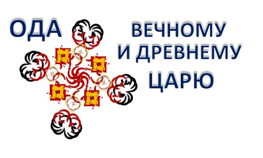

3 января 2021г.
ОДА ВЕЧНОМУ И ДРЕВНЕМУ ЦАРЮ🎧
Каббалистическая пьеса в стихах
✦ ❧ ✦
...Спрашивала Малхут у Хохмы"Как подняться в Рош Аба ве Има?"
- "Лишь когда ИШСУТ облачены""В Нукву твоего Зеир Анпина,""Может быть Им задан твой вопрос"
- "Свят Благословен Живой Господь,"Има отвечала вместо Малхут,"Ибо Он дал праведникам плоть,""Чья участь - каждое мгновенье бытия""Гнить в мерзости презренной и порочной""И лишь когда грешить нет больше мочи""Стать снова сможет прахом плоть твоя,""Но пред этим, правдою послужит."
- "Слушаю Творца и повинуюсь,""Ведь Господь Один - Властитель Мира,""И все, украденное мерзостной клипой,""Да изрыгнет наружу, на Суд Божий""Всю мерзость плоти разлагающихся тел""Во всей нечистоте и скверне их пороков."
Сказал Творец: "Поднимем Правду из земли""И стало так, и мертвые воскресли...""Суд совершит Великий Атик Йомин,""Над каждым прегрешением души""Представленным пред Ним для осужденья".
"Для той души, которая грешила,""По мере степени всей тяжести греха""Владыка делает 17 украшений,""Выше которых в мире не было пока"<как будто Заповедь большую совершила>"А не пал, любя любовью мерзость".
"Работникам Творца Творец дал зло""С одной единственною величественной Целью:""И Святость с мерзостью лишь образы Его"
"Поскольку захотел Творец творение""К любви взаимной обоюдно привести,""Не может в нем Он Сам произвести""По записи: вот это я люблю, поскольку""Приводит к Цели Самого Творца.""Но не: поскольку сердцем и душой""ЛюбИм Благословенный наш Хозяин""Который мне доставить наслажденье""Желает. А значит следует мне, как заведено,"Любить всем сердцем и душой, что дорого Ему, <и ненавидеть ненавистью все что Ему чуждо>
"И если любящие так, без всякой фальши, -""Немедленно сливаются в любви, "И умножают наслаждение друг другу."Воодушевленье передать любимому стремясь""От предстоящего конца ловушки""Не выберется из которой сила зла""Ведь точно также для того, чтобы едины"Любимые и не могло ничто"Меж ними разделить хоть в "этом мире""Хоть в Мире Будущем, хоть в мирах БЕА,"И так заведено во всех мирах, чтоб было"Что ненавистно одному извечно быть"Мечтающими слитыми в одно, то должен"Возненавидеть ненавистью страшной, "Непримиримо, и ни в чем ни допускать даже намека"На свойства, важность коих я презрел.""Не потому, что это мне плохое, или хорошее потом,"Избавит или даст, а потому, что только так "Слиянье между Атиком и мною""Однажды перестанет быть мечтою""Но тени призрачной подобным станет "этот мир"
...Чтобы родиться вновь уже навечно,Наполненной всем благом совершенстваТого, Кто Вечно пребывает в Ней ради Ее любви. Подобно праху под Ее ногами,Который, как Творец над Небесами,Презрел свой неминуемый распад,Из праха встав, чтобы вернуться в прах.
Написано 18/04/20 - 03/01/21, где-то между началом конца и концом начала Исправления "этого мира", являющегося Кругом Вечной Жизни, в котором все, кроме автора, уже "исправлено" и в исправлении не нуждается
см. также:
- Библия (Тора), Бытие (Берешит). Сказка о предательстве человеком (Адам) самого себя, когда он послушался совета "змея", несущего неминуемую смерть, чтобы доставить этим наслаждение любимой женщине, сделавшей это из любви к свободе (ради достижения Цели Творца, которая была ей открыта Змеем, до "сотворения мира" скрывавшемся внутри "яблока", а впоследствии ставшим "ползающим на брюхе" и питающимся прахом "этого мира").
- Александр Поуп. Элоиза Абеляру. Трагическая история любви Мужчины и Женщины, невозможной по законам "этого мира" и, благодаря этому, совершенной и вечной